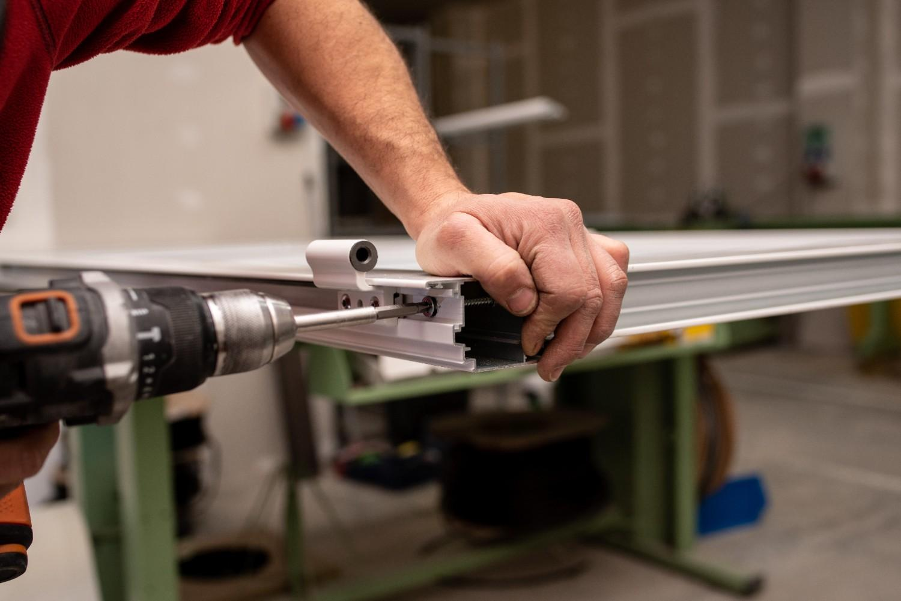

Complete window frame replacement for damaged, warped, or outdated frames. Restore structural integrity and improve energy efficiency.
When window frames become damaged, warped, or deteriorated beyond repair, complete frame replacement is the best solution. Our expert frame replacement services restore your windows' structural integrity, improve energy efficiency, and enhance your property's appearance.
Rotting wood, rusted metal, or cracked frames beyond repair.
Drafts, air leaks, and poor insulation around window frames.
Windows that stick, won't open/close, or have alignment problems.
Outdated styles that don't match your home's current look.
When to replace just the glass: Minor glass damage, functioning frames, budget constraints
When to replace the entire frame: Frame damage, poor energy efficiency, operation problems, major renovations
Our experts will assess your situation and recommend the most cost-effective solution.
Professional process ensuring perfect fit and lasting results
Comprehensive evaluation of existing frames and detailed planning for replacement project.
Frames manufactured to exact specifications ensuring perfect fit and optimal performance.
Professional removal and installation with attention to insulation, sealing, and structural integrity.
Final inspection, testing, and warranty registration to ensure complete satisfaction.
Common questions about window frame replacement services
If frames are rotting, warped, difficult to operate, or have significant air leaks, full replacement is recommended. We provide free assessments to determine the best solution.
Most residential frame replacements take 1-2 days per window. Custom frames may require 2-4 weeks for manufacturing before installation.
Yes, new frames with proper insulation and sealing can significantly reduce energy loss and lower heating/cooling costs by 10-25%.
We provide a 10-year warranty on installation workmanship plus manufacturer warranties on frame materials, typically 10-20 years depending on material.
Get expert assessment and professional frame replacement service with comprehensive warranty.